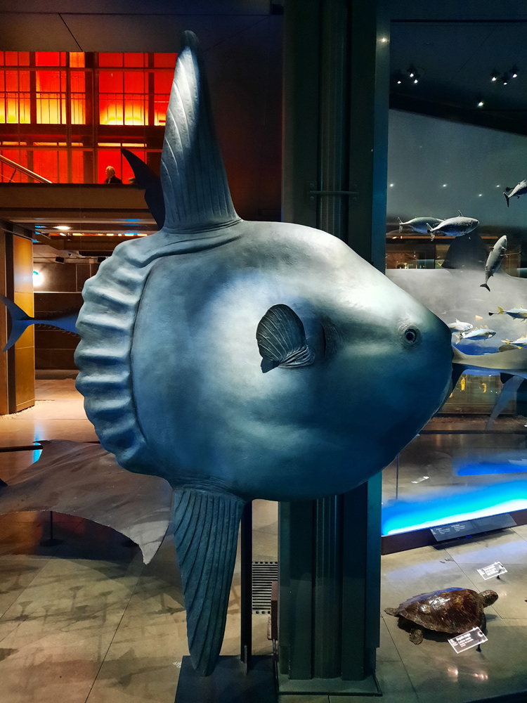

poisson lune 3D
Suite à une visite à la Grande Galerie de l'Évolution à Paris, j’ai décidé de modéliser en “low-poly” et d’animer un poisson lune, dont l’espèce est menacée. Ce travail m’a permis de me familiariser avec les bases du logiciel Blender.
(si la vidéo ne s'afiche pas correctement, cliquez ici
!)
